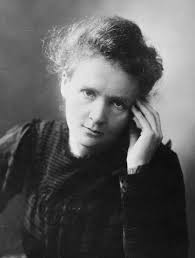

Marie was born in Warsaw, Poland on November 7, 1867. In 1891, Her father, Wladyslaw Sklodowski, taught mathematics and physics, which were the to subjects that eventually became her profession. She went to Paris to study physics and mathematics at the Sorbonne where she met Pierre Curie, the professor of the School of Physics whom she then married in 1895. Her and her husband ended up working together to investigate radioactivity.
In 1898, the Curies announced the discovery of a new chemical element, polonium, then no more than a year later, radium. They were awarded the Nobel Prize for Physics in 1903. Marie took over her husband's teaching post after he died due to a carriage. After the dedicating herself to continuing the work they started, Marie Curie received a second Nobel Prize for Chemistry in 1911.
Her research led her to helped to equip ambulances with x-ray equipment, during WWI. Because of this, the International Red Cross made her head of its radiological service and she held training courses for medical orderlies and doctors in the new techniques. Marie never was given significant financial benefits from her work because she faced great opposition from male scientists in France. Her health began to go downhill by the late 1920s. She died on July 4, 1934 from leukemia. Her leukemia was caused by the large amounts of exposure to high-energy radiation from her research. Marie Curie seemed to have made a great impact on science research and lived a very successful life.